Nuestros Productos y Componentes
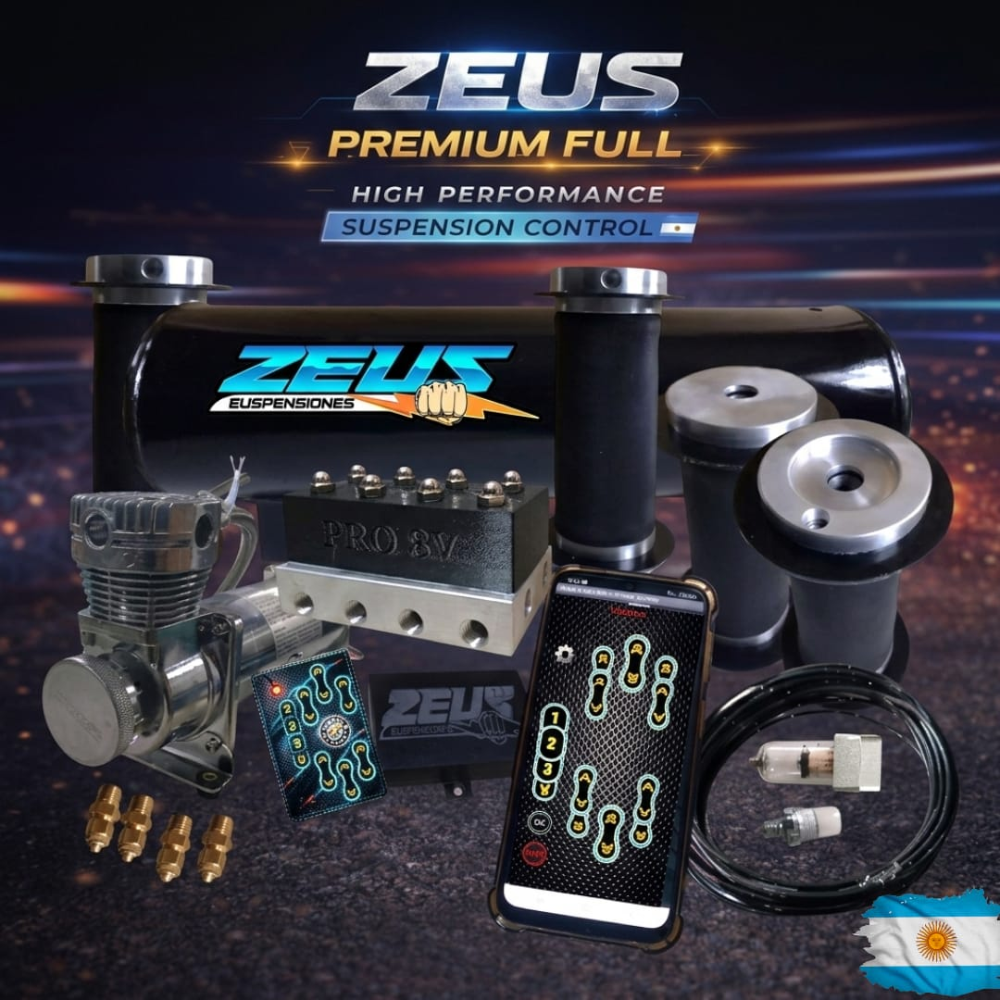
Zeus Premium Suspension Universal
Sistema inteligente con conectividad Bluetooth 5.0 Android, 3 ajustes personalizados y control remoto independiente. 4 pulmones preimum de Aluminio. Tanque de Aire. Compresor 200 psi. Presostato. Bloque de 4 valvulas por 8 mm (facil de mantencion). Central remota Nueva Generacion con memoria de altura. 1 kit de cuplas y acoples. 1 trampa de agua (recomendada) ayuda a la durabilidad del sistema
$ 950.000
12 cuotas de $ 135.000
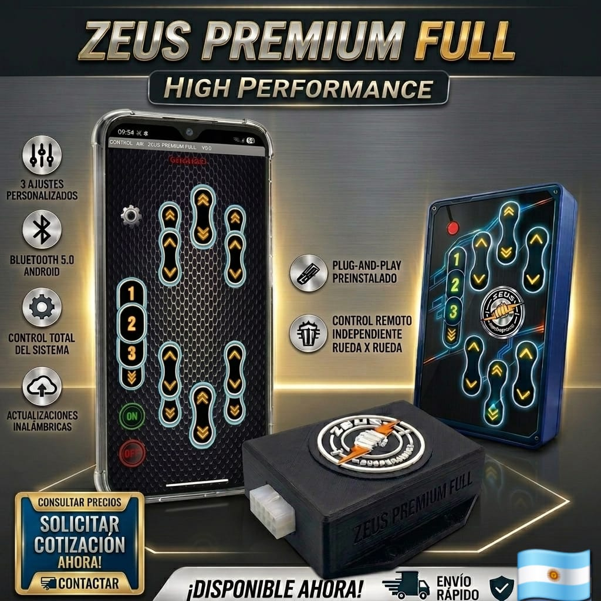
Central 8 canales Bt Android mas control remoto
Central 8 canales para suspension Neumatica con relay para mejorar la conduccion de la potencia, contiene control remoto por rueda y 3 memorias de altura programable por Bt Android.Adaptable a cualquier Kit.
$ 190.000
consulta ofertas Segun Bancos
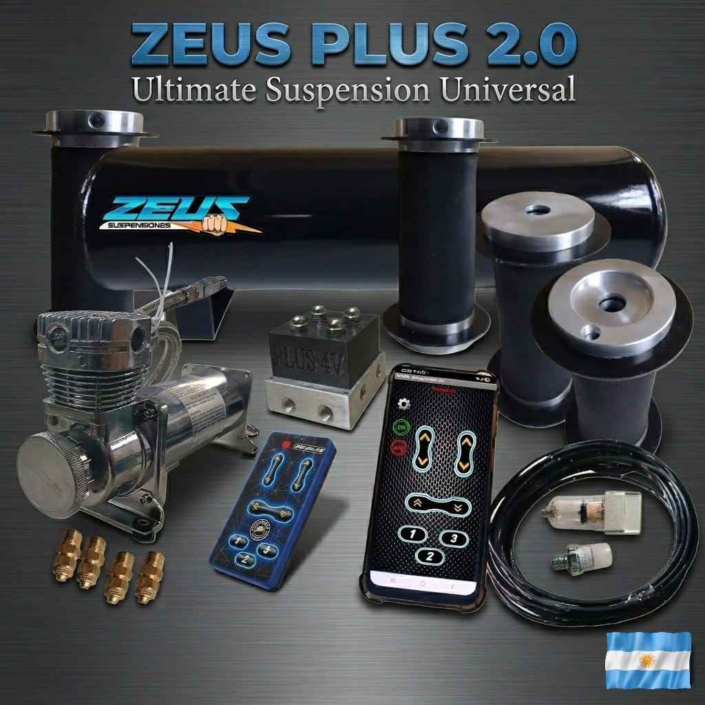
Zeus premium Full
Sistema de suspensión premium. Incluye 4 pulmones premium de aluminio rectos 1 tanque de aire 1 compresor 200 psi 1 presostato 1 bloque de 8 valvulas por 8mm (facil de mantecion) 1 central de control remoto 8 canales mas bluetooh Android y 3 memorias de altura programables 1 control remoto por rueda individual mas 3 memorias NUEVO MODELO. 1 Rollo de manguera 1 kit de cuplas y acoples 1 trampa de agua 1 par de amortiguadores delanteros a medida especiales para Neumatica
$ 1.380.000
Tarjeta de credito 6 cuotas de $ 305.900
Kit zeus plus 2.0
Sistema de suspensión premium. Incluye 4 pulmones premium de aluminio rectos 1 tanque de aire 1 compresor 200 psi 1 presostato 1 bloque de 4 valvulas por 8mm (facil de mantecion) 1 central de control remoto mas Bt Android y 3 memorias de altura 1 control remoto por rueda individual mas 3 memorias NUEVO MODELO. 1 Rollo de manguera 1 kit de cuplas y acoples 1 trampa de agua 1 par de amortiguadores delanteros a medida especiales para Neumatica
$ 1.160.000
Tarjeta de credito 6 cuotas de $ 257.000
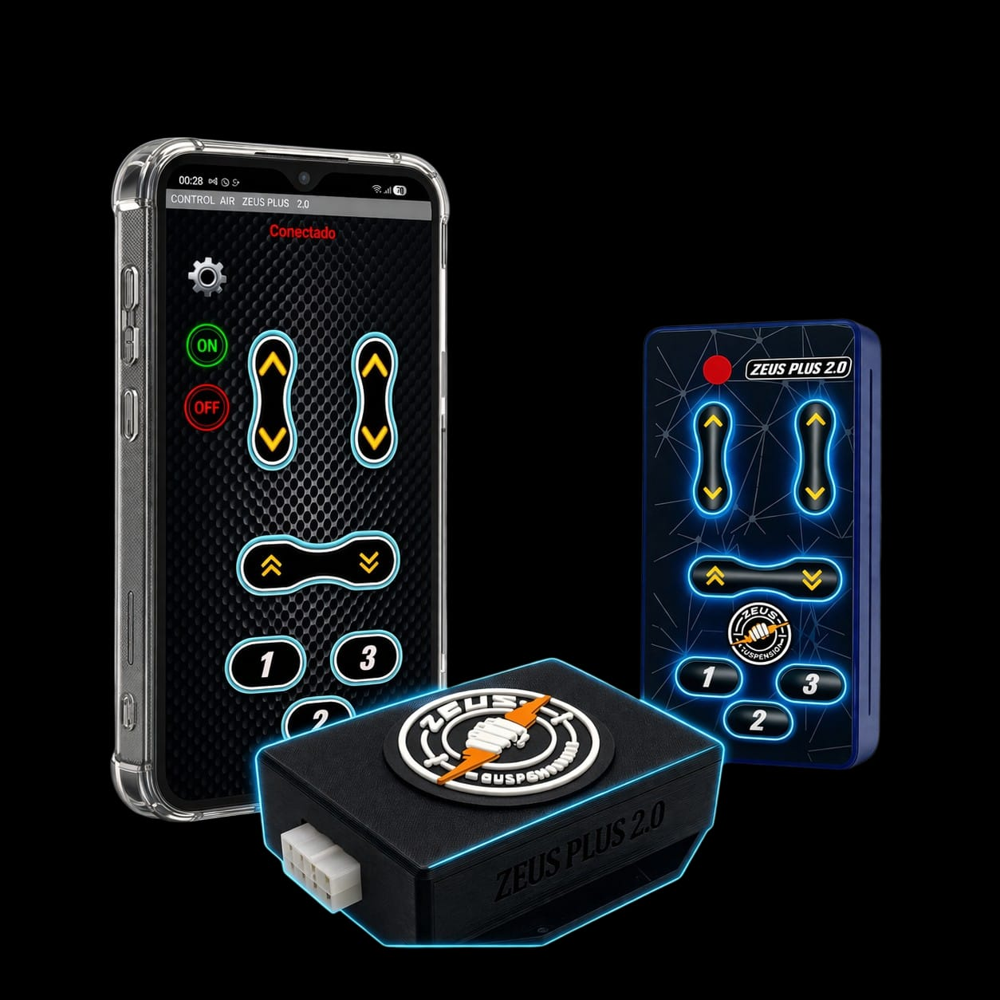
Central 4 canales mas Bt Android
Central de suspension Neumatica de 4 canales adaptable a cualquiero kit.
$ 100.000
6 cuotas de $ 22.000
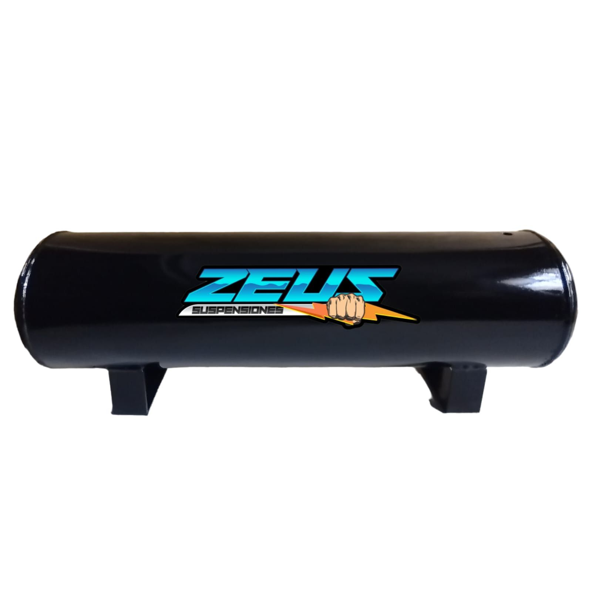
Tanque de hierro
Medidas aprox. 600MM largo por 150mm diametro por 200mm alto
$ 110.000
Consultar Ofertas segun Bancos
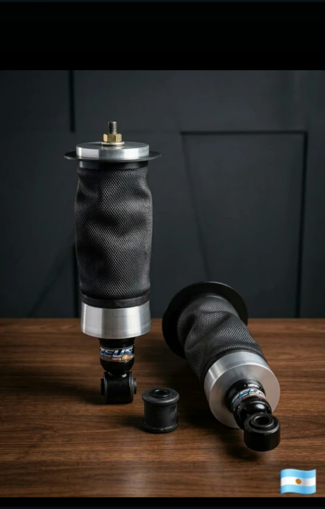
Reforma Especial LLevalo con un kit y obtene un precio rebajado
Reforma Especial a la medida con amortiguadores incluidos trabajados, incluye el par de Pulmones bases conica de aluminio 6061 t6, excelente Calidad
$ 560.000
Consultar Ofertas segun Bancos

Tanque de Aluminio
Tanque de aluminio Zeus excelente Calidad
$ Sin stock
Consultar Ofertas segun Bancos

Amortiguadores a medida
Suspension Fija a medida Consultar como te gustaria
$ 250.000
Consultar Ofertas segun Bancos

Zeus pulmones pasantes Premiun Aluminio
Rendimiento superior y estética industrial impecable.
$ 120.000 c/u
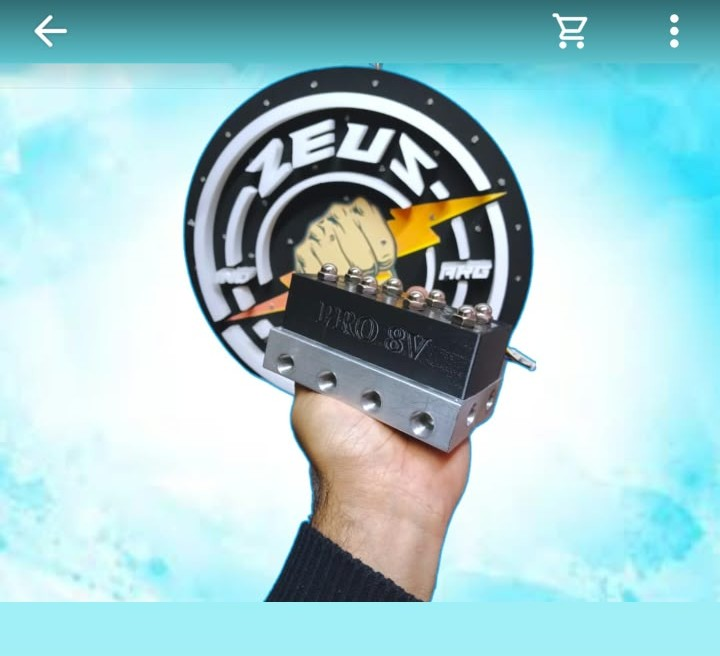
Zeus Bloque de 8 valvulas
Nuevos modelos de bloque de 8 valvulas ideal para suspension de 10MM ya que tiene caudal Grande, pero tranquilamente podes usarlos en 8 MM
$ 320.000

Zeus Bloque de 4 valvulas
Bloque de 4 valvulas ideal 10MM hasta 200psi
$ 160.000
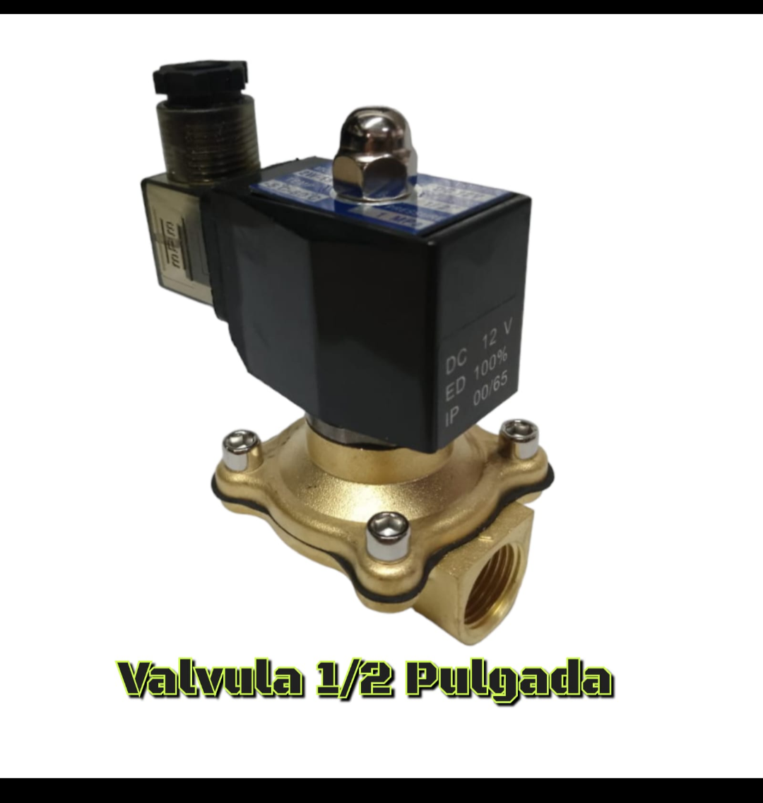
Zeus Bloque de Media Pulgada
Valvula de media pulgada
$ sin stock
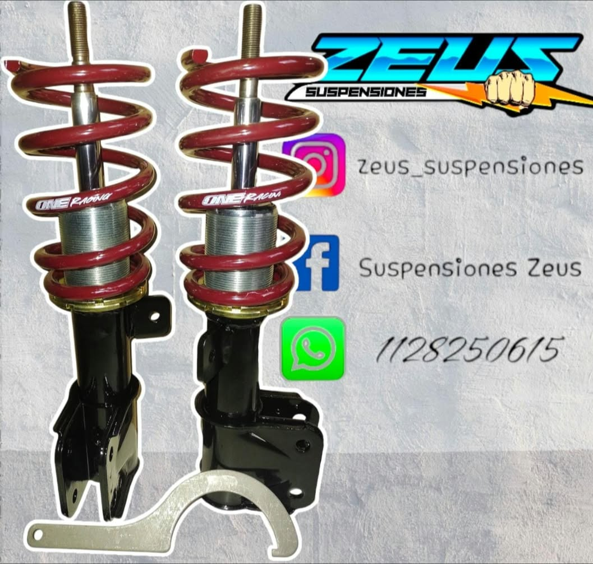
Zeus Suspension Regulable a medida
Suspension regulable a medida El par de regulables delanteras tienen espirales y amortiguador a medida (un aprox segun lo buscado) Las camisas soldadas y tuerca para regular con llave tiene un rango de 7/8 cm para regular. Tambien si tu vehicula no lleva barra de torcion atras podes aprovechar nuestros combos consulta los disponibles.
$ 330.000

Zeus Relojes digitales
Relojes digitales para monitoreo de sistema contiene 1 reloj (52MM diametro) con dos sensores de rosca 1/8 cables con ficha plug de 5 mts. de Largo.
$ sin stock

Zeus Suspension 1/4 de Milla
Suspension de competicion.
$ consultar
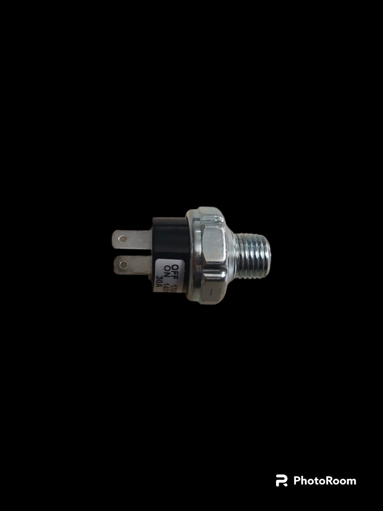
Sensor
Precisión absoluta para el monitoreo y control del sistema.
$ XXX.XXX
Consultar Ofertas segun Bancos
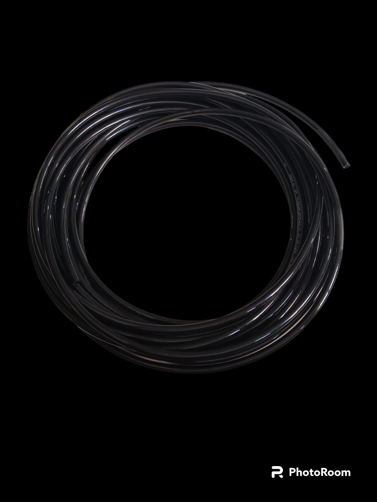
Manguera de Alta Presión
Conexiones seguras y resistentes diseñadas para exigencia extrema.
$ se incluye en los kit de todas maneras podes consultar
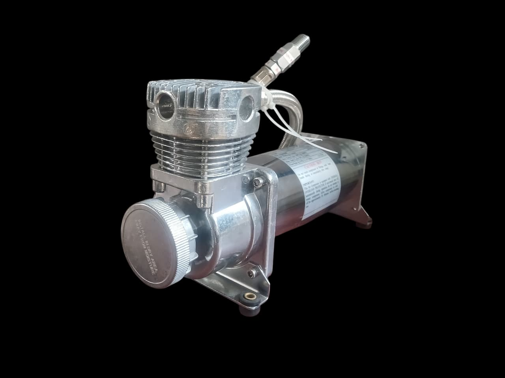
Cabezal
Piezas metálicas robustas con terminación de alta calidad.
$ XXX.XXX
.jpeg)
Zeus Premiun Aluminio Pulmones Cerrados
Rendimiento superior y estética industrial impecable.
$ 120.000 c/u

.png)
.png) Click en las imagenes para ir a nuestras redes sociales
Click en las imagenes para ir a nuestras redes sociales